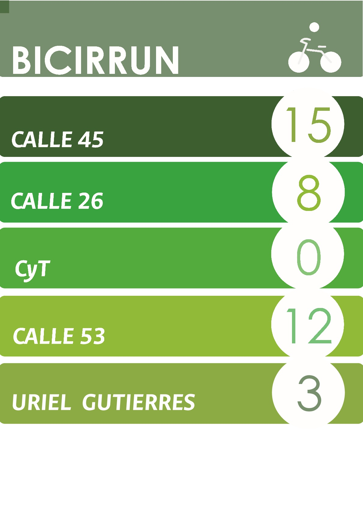

SISTEMA INFORMATIVO DE TRANSPORTE U.N.
El servicio de BICIRRUN cuenta actualmente con 50 bicicletas, distribuidas
en 5 puntos dentro de la universidad, para hacer uso de estas hay que registrarse en
http://bicirrun.bogota.unal.edu.co/registrarse.php
.

Para registrarse es necesario estar activo en la universidad, ya sea como docente, estudiante o contratista.
Una vez registrado el usuario puede solicitar una bicicleta en uno de los siguientes puntos:
CALLE 45
CALLE 26
CyT
CALLE 53
URIEL GUTIERRES
Actualmente la disponibilidad en cada punto es la siguiente:
